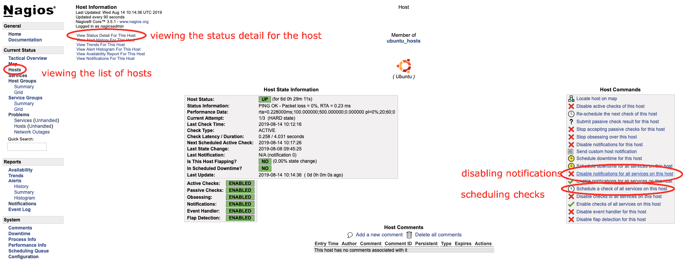

Nagios
Installing NRPE
https://support.nagios.com/kb/article/nrpe-how-to-install-nrpe-8.html
cd /tmp
wget http://assets.nagios.com/downloads/nagiosxi/agents/linux-nrpe-agent.tar.gz
tar xzf linux-nrpe-agent.tar.gz
cd linux-nrpe-agent
./fullinstall
Uninstalling NRPE
https://support.nagios.com/kb/article/nrpe-how-to-uninstall-nrpe-741.html#Ubuntu
# Remove XINETD daemon
sudo rm -f /etc/xinetd.d/nrpe
sudo systemctl restart xinetd
# Stop and remove dedicated daemon
sudo systemctl stop nrpe.service
sudo systemctl disable nrpe.service
sudo rm -f /lib/systemd/system/nrpe.service
sudo systemctl daemon-reload
# Delete NRPE Files
sudo rm -f /usr/local/nagios/bin/nrpe*
sudo rm -f /usr/local/nagios/etc/nrpe*
sudo rm -f /usr/local/nagios/libexec/*nrpe*
Install Nagios Core
https://linuxhint.com/install_nagios_ubuntu/
# Install prerequisites
sudo apt install -y build-essential apache2 php openssl perl make php-gd libgd-dev libapache2-mod-php libperl-dev libssl-dev daemon wget apache2-utils unzip
# User account
sudo useradd nagios
sudo groupadd nagios
sudo usermod -a -G nagios nagios
sudo usermod -a -G nagios www-data
# Download Nagios
cd /tmp
wget https://assets.nagios.com/downloads/nagioscore/releases/nagios-4.4.5.tar.gz
tar -zxvf /tmp/nagios-4.4.5.tar.gz
cd /tmp/nagios-4.4.5/
# Compile Nagios
sudo ./configure --with-nagios-group=nagios --with-command-group=nagios --with-httpd_conf=/etc/apache2/sites-enabled/
sudo make all
sudo make install
sudo make install-init
sudo make install-config
sudo make install-commandmode
sudo make install-webconf
cd /tmp/nagios-4.4.5$ sudo htpasswd -c /usr/local/nagios/etc/htpasswd.users
sudo a2enmod cgi
sudo systemctl restart apache2
# Nagios Plugins
cd /tmp
wget https://nagios-plugins.org/download/nagios-plugins-2.3.3.tar.gz
tar -zxvf /tmp/nagios-plugins-2.3.3.tar.gz
cd /tmp/nagios-plugins-2.3.3/
sudo ./configure --with-nagios-user=nagios --with-nagios-group=nagios
sudo make
sudo make install
# Using Nagios
sudo /usr/local/nagios/bin/nagios -v
cd /usr/local/nagios/etc/nagios.cfg
sudo systemctl enable nagios
sudo systemctl start nagios
Uninstall Nagios
https://support.nagios.com/forum/viewtopic.php?t=34007
Stop the Nagios daemon
Remove the web conf, if you installed it
Remove the user and group that you added for Nagios
Remove the init script
Remove /usr/local/nagios directory
find / -iname '*nagios*'
delete everything
Errors
(No output on stdout) stderr:
sudo apt-get install nagios-plugins
Adding Linux Hosts
On the Nagios Box
# Create the host in config (see below example config file)
nano /etc/nagios3/conf.d/server.fqdn.com.cfg
# ALWAYS verify Nagios config before reloading service, ensure that there are no errors (warnings are okay)
cd /etc/nagios3/
nagios3 -v nagios.cfg
# If no errors, you should be safe to reload nagios service (DO NOT restart service)
/etc/init.d/nagios3 reload
Example config file (the last service is a custom service check example):
define host {
address server.example.com
alias server.example.com
check_command check_ping!100.0,20%!500.0,60%
host_name server.example.com
hostgroups ubuntu_hosts
max_check_attempts 3
notification_period 24x7
use generic-host
}
define hostextinfo {
host_name server.example.com
icon_image base/ubuntu.png
icon_image_alt Ubuntu
statusmap_image base/ubuntu.gd2
}
define service {
check_command check_nrpe!check_load
display_name CPU Load
host_name server.example.com
max_check_attempts 3
notification_period 24x7
service_description CPU Load
use generic-service
}
define service {
check_command check_nrpe!check_mem
display_name Memory
host_name server.example.com
max_check_attempts 3
notification_period 24x7
service_description Memory
use generic-service
}
define service {
check_command check_nrpe!check_vda1
display_name Disk Status
host_name server.example.com
max_check_attempts 3
notification_period 24x7
service_description Disk vda1 Status
use generic-service
}
define service {
check_command check_tcp!22
display_name SSH/sftp Port 22
host_name server.example.com
max_check_attempts 3
notification_period 24x7
service_description SSH/sftp Port 22
use generic-service
}
define service {
check_command check_nrpe!check_total_procs
display_name Total Procs
host_name server.example.com
max_check_attempts 3
notification_period 24x7
service_description Total Procs
use generic-service
}
define service {
check_command check_nrpe!check_users
display_name User Check
host_name server.example.com
max_check_attempts 3
notification_period 24x7
service_description Users Check
use generic-service
}
define service {
check_command check_nrpe!check_zombie_procs
display_name Zombie Procs
host_name server.example.com
max_check_attempts 3
notification_period 24x7
service_description Zombie Procs
use generic-service
}
define service {
check_command check_nrpe!check_OpManager
display_name Netflow Service
host_name server.example.com
max_check_attempts 3
notification_period 24x7
service_description Netflow Service Status
use generic-service
}
define service {
check_command check_nrpe!check_mysql
display_name MySQL Status
host_name nagiosserver.example.com
max_check_attempts 3
notification_period 24x7
service_description MySQL Status
use generic-service
}
In the GUI:
After adding the host and reloading the Nagios service, quickly go to the Nagios GUI and mute the notifications. You can also schedule a check to re-check the host’s service statuses (almost) immediately, view the status detail for the host (list of items Nagios is monitoring), etc.

On the host to monitor
# See if Nagios is already installed
dpkg -l | grep nagios
# Install Nagios
apt-get install nagios-nrpe-server nagios-plugins-basic
# Add your custom checks (see below custom_nrpe.cfg file)
nano /etc/nagios/nrpe.d/custom_nrpe.cfg
# Create the check_mem plugin, as it's a custom, standard check (see below check_mem file)
nano /usr/lib/nagios/plugins/check_mem
# Make the file executable
chmod +x /usr/lib/nagios/plugins/check_mem
# Add x.x.x.x (servername) to the allowed hosts (you will get "CHECK_NRPE: Error - Could not complete SSL handshake." in Nagios GUI if you don't add this line)
nano /etc/nagios/nrpe.cfg
allowed_hosts=127.0.0.1,x.x.x.x
# Restart the nagios-nrpe-server for it to recognise the change
/etc/init.d/nagios-nrpe-server restart
File custom_nrpe.cfg
##########################################################
# #
# you can place all you custom-config snipplets here #
# only snipplets ending in .cfg will get included #
# #
##########################################################
#
# Generic Checks - For all nodes
command[check_zombie_procs]=/usr/lib/nagios/plugins/check_procs -w 5 -c 10 -s Z
command[check_total_procs]=/usr/lib/nagios/plugins/check_procs -w 600 -c 800
command[check_vda1]=/usr/lib/nagios/plugins/check_disk -w 10% -c 5% -x tmpfs -x udev -x /snap/*
command[check_disk_inode]=/usr/lib/nagios/plugins/check_disk_inodes -w 80 -c 90 -p /
command[check_running_proc]=/usr/lib/nagios/plugins/check_procs $ARG1$
command[check_puppet_agent]=sudo /usr/lib/nagios/plugins/check_puppet_agent
command[check_open_deleted_files]=sudo /usr/lib/nagios/plugins/check_open_deleted_files -w 15000000000 -c 20000000000
command[check_kernel]=sudo /usr/lib/nagios/plugins/check_kernel
command[check_users]=/usr/lib/nagios/plugins/check_users -w 10 -c 20
command[check_sssd_status]=/usr/lib/nagios/plugins/check_sssd_status
command[check_java_version]=/usr/lib/nagios/plugins/check_java_version
# Check Load - Defined per node type
##command[check_load]=/usr/lib/nagios/plugins/check_load -w 15.0,10,5 -c 30,25,20
#
command[check_load]=/usr/lib/nagios/plugins/check_load -r -w 2.5,2,1.5 -c 4,3.5,3
# Check Load - Defined per node type
command[check_mem]=/usr/lib/nagios/plugins/check_mem -w 85 -c 95
# KONG Checks
command[check_kong]=/usr/lib/nagios/plugins/check_kong
# ntpd Checks
command[check_ntpd]=/usr/lib/nagios/plugins/check_ntpd --peer_warning 1 --peer_critical 0
# TOMCAT Checks
#command[check_tomcat]=/usr/lib/nagios/plugins/check_tomcat -H localhost -p 8080 -w 10%,50 -c 5%,10 -l nagios -a i1I605LzIG7V
command[check_tomcat]=/usr/lib/nagios/plugins/check_tomcat 10 80 10 admin Masehare
# Percona/MySQL Checks
command[check_percona_cluster_size]=sudo /usr/lib64/nagios/plugins/pmp-check-mysql-status -x wsrep_cluster_size -C '<=' -w 2 -c 1
command[check_percona_primary_cluster]=sudo /usr/lib64/nagios/plugins/pmp-check-mysql-status -x wsrep_cluster_status -C == -T str -c non-Primary
command[check_percona_local_node_sync]=sudo /usr/lib64/nagios/plugins/pmp-check-mysql-status -x wsrep_local_state_comment -C '!=' -T str -w Synced
command[check_percona_flow_control]=sudo /usr/lib64/nagios/plugins/pmp-check-mysql-status -x wsrep_flow_control_paused -w 0.1 -c 0.9
command[check_mysql_status]=/usr/lib64/nagios/plugins/pmp-check-mysql-status $ARG1$
command[check_mysql_processlist]=/usr/lib64/nagios/plugins/pmp-check-mysql-processlist
command[check_mysql_innodb]=/usr/lib64/nagios/plugins/pmp-check-mysql-innodb -C $ARG1$
command[check_mysql_status_uptime]=/usr/lib64/nagios/plugins/pmp-check-mysql-status x Uptime -C '<' -w $ARG1$ -c $ARG2$
command[check_mysql_status_connx]=/usr/lib64/nagios/plugins/pmp-check-mysql-status -x Threads_connected -o / -y max_connections -T pct -w $ARG1$ -c $ARG2$
command[check_mysql_status_threadrun]=/usr/lib64/nagios/plugins/pmp-check-mysql-status -x Threads_running -w $ARG1$ -c $ARG2$
command[check_mysql_slave_running]=/usr/lib64/nagios/plugins/pmp-check-mysql-replication-running
command[check_mysql_slave_delay]=/usr/lib64/nagios/plugins/pmp-check-mysql-replication-delay
# MemSQL Checks - ALL
command[check_memsql_orphans]=/usr/lib/nagios/plugins/check_memsql_orphans
command[check_memsql_stat_only]=/usr/lib/nagios/plugins/check_memsql_dbs_only
command[check_memsql_memory]=/usr/lib/nagios/plugins/check_memsql_mem
command[check_port_3306_on_all_memsql_nodes]=/usr/lib/nagios/plugins/check_memsql_connections
# MemSQL Checks - mem_master
# NGINX Checks
command[check_nginx_status]=/usr/lib/nagios/plugins/check_nginx_status -H localhost -P 9396 -w 10000 -c 20000
command[check_nginx_procs]=/usr/lib/nagios/plugins/check_procs --argument-array="/usr/sbin/nginx -g daemon on; master_process on" -w 1:1 -c 1:1
# Rabbit MQ Checks
command[check_rabbit_status]=/usr/lib/nagios/plugins/check_rabbit_stat -n aliveness-test -q status
command[check_rabbit_msg_ready]=/usr/lib/nagios/plugins/check_rabbit_stat -n overview -q messages_ready -c 2000 -w 10000
command[check_rabbit_msg_unack]=/usr/lib/nagios/plugins/check_rabbit_stat -n overview -q messages_unacknowledged -w 0 -c 10
command[check_rabbit_publish]=/usr/lib/nagios/plugins/check_rabbit_stat -n overview -q publish_details
command[check_rabbit_msg_ack]=/usr/lib/nagios/plugins/check_rabbit_stat -n overview -q ack_details
command[check_rabbit_deliver_get]=/usr/lib/nagios/plugins/check_rabbit_stat -n overview -q deliver_get_details
command[check_rabbit_msg_redeliver]=/usr/lib/nagios/plugins/check_rabbit_stat -n overview -q redeliver_details -w 40 -c 80
command[check_rabbit_msg_deliver]=/usr/lib/nagios/plugins/check_rabbit_stat -n overview -q deliver_details
command[check_rabbit_deliver_no_ack]=/usr/lib/nagios/plugins/check_rabbit_stat -n overview -q deliver_no_ack_details
command[check_rabbit_get_no_ack]=/usr/lib/nagios/plugins/check_rabbit_stat -n overview -q get_no_ack_details
command[check_rabbit_memory]=/usr/lib/nagios/plugins/check_rabbit_stat -n nodes -q memory
# NODEJS Checks
command[check_node_pm2_status]=/usr/bin/sudo -i -u serviceuser check_node_pm2 -A -S -R --rwarn 5 --rcrit 10
# Dockerswarm checks
command[check_docker_procs]=/usr/lib/nagios/plugins/check_procs --argument-array=/var/run/docker/containerd/containerd.toml -w 1:1 -c 1:1
#
# Wordpress
command[check_glusterfs]=/usr/lib/nagios/plugins/check_glusterfs -v wordpress_files -n 2
command[check_php5fpm_status]=/usr/lib/nagios/plugins/check_phpfpm_status -o linux -s php5-fpm
command[check_php71fpm_status]=/usr/lib/nagios/plugins/check_phpfpm_status -o linux -s php7.1-fpm
command[check_wpress_version]=/usr/lib/nagios/plugins/check_wp_version
# Glusterfs Checks
command[check_gluster_procs]=/usr/lib/nagios/plugins/check_procs --argument-array="/usr/sbin/glusterd -p /var/run/glusterd.pid" -w 1:1 -c 1:1
command[check_glusterfs_health]=/usr/lib/nagios/plugins/check_glusterfs_health
# Gitlab Checks
command[check_gitlab_procs]=/usr/lib/nagios/plugins/check_procs --argument-array=/etc/gitlab-runner/config.toml -c 1:1
# ClusterControl Checks
command[check_cluster_control]=/usr/lib/nagios/plugins/check_cluster_control
# MongoDB
command[check_mongo_connections]=/usr/lib64/nagios/plugins/pmp-check-mongo.py -A check_connections
command[check_mongo_election]=/usr/lib64/nagios/plugins/pmp-check-mongo.py -A check_election
command[check_mongo_repl_lag]=/usr/lib64/nagios/plugins/pmp-check-mongo.py -A check_repl_lag
command[check_mongo_flushing]=/usr/lib64/nagios/plugins/pmp-check-mongo.py -A check_flushing
command[check_mongo_total_indexes]=/usr/lib64/nagios/plugins/pmp-check-mongo.py -A check_total_indexes
command[check_mongo_balance]=/usr/lib64/nagios/plugins/pmp-check-mongo.py -A check_balance
command[check_mongo_queues]=/usr/lib64/nagios/plugins/pmp-check-mongo.py -A check_queues
command[check_mongo_cannary_test]=/usr/lib64/nagios/plugins/pmp-check-mongo.py -A check_cannary_test
command[check_mongo_have_primary]=/usr/lib64/nagios/plugins/pmp-check-mongo.py -A check_have_primary
command[check_mongo_connect]=/usr/lib64/nagios/plugins/pmp-check-mongo.py -A check_connect
command[check_mongo_oplog]=/usr/lib64/nagios/plugins/pmp-check-mongo.py -A check_oplog
## Elasticsearch
command[check_elasticsearch]=/usr/lib/nagios/plugins/check_elasticsearch.sh -H localhost -u elastic -p tusfDtzYSEtb
## ZFS
command[check_zfs_pool_health]=/usr/lib/nagios/plugins/check_zfs_pool_health
## Netflow
command[check_OpManager]=/usr/lib/nagios/plugins/check_procs -a OpManager
## Zabbix
command[check_zabbix_server]=/usr/lib/nagios/plugins/check_procs -c 1: -w 3: -C zabbix_server
command[check_zabbix_agent]=/usr/lib/nagios/plugins/check_procs -c 1: -w 3: -C zabbix_agentd
command[check_mysql]=/usr/lib/nagios/plugins/check_procs -a mysql
File check_mem
#!/bin/bash
if [ "$1" = "-w" ] && [ "$2" -gt "0" ] && [ "$3" = "-c" ] && [ "$4" -gt "0" ]; then
FreeM=`free -m`
memTotal_m=`echo "$FreeM" |grep Mem |awk '{print $2}'`
memUsed_m=`echo "$FreeM" |grep Mem |awk '{print $3}'`
memFree_m=`echo "$FreeM" |grep Mem |awk '{print $4}'`
memBuffer_m=`echo "$FreeM" |grep Mem |awk '{print $6}'`
memCache_m=`echo "$FreeM" |grep Mem |awk '{print $7}'`
memUsed_m=$(($memUsed_m - $memCache_m))
memUsedPrc=`echo $((($memUsed_m*100)/$memTotal_m))||cut -d. -f1`
if [ "$memUsedPrc" -ge "$4" ]; then
echo "Memory: CRITICAL Total: $memTotal_m MB - Used: $memUsed_m MB - $memUsedPrc% used!|TOTAL=$memTotal_m;;;; USED=$memUsed_m;;;; CACHE=$memCache_m;;;; BUFFER=$memBuffer_m;;;;"
exit 2
elif [ "$memUsedPrc" -ge "$2" ]; then
echo "Memory: WARNING Total: $memTotal_m MB - Used: $memUsed_m MB - $memUsedPrc% used!|TOTAL=$memTotal_m;;;; USED=$memUsed_m;;;; CACHE=$memCache_m;;;; BUFFER=$memBuffer_m;;;;"
exit 1
else
echo "Memory: OK Total: $memTotal_m MB - Used: $memUsed_m MB - $memUsedPrc% used|TOTAL=$memTotal_m;;;; USED=$memUsed_m;;;; CACHE=$memCache_m;;;; BUFFER=$memBuffer_m;;;;"
exit 0
fi
else # If inputs are not as expected, print help.
sName="`echo $0|awk -F '/' '{print $NF}'`"
echo -e "\n\n\t\t### $sName Version 2.0###\n"
echo -e "# Usage:\t$sName -w <warnlevel> -c <critlevel>"
echo -e "\t\t= warnlevel and critlevel is percentage value without %\n"
echo "# EXAMPLE:\t/usr/lib64/nagios/plugins/$sName -w 80 -c 90"
echo -e "\nCopyright (C) 2012 Lukasz Gogolin (lukasz.gogolin@gmail.com), improved by Nestor 2015\n\n"
exit
fi
Troubleshooting
### On the Nagios Box
# Check the log, grepping a part of the server name you what to see a log for
tail -f /var/log/nagios3/nagios.log | grep netflow
### On the Host to Monitor
## Test to see if you can run the checks (these are found in /etc/nagios/nrpe.d/custom_nrpe.cfg)
# CPU Load
/usr/lib/nagios/plugins/check_load -r -w 2.5,2,1.5 -c 4,3.5,3
# Disk vda1 Status
/usr/lib/nagios/plugins/check_disk -w 10% -c 5% -x tmpfs -x udev -x /snap/*
# Memory
/usr/lib/nagios/plugins/check_mem -w 85 -c 95
# Total Procs
/usr/lib/nagios/plugins/check_procs -w 600 -c 800
# Users Check
/usr/lib/nagios/plugins/check_users -w 10 -c 20
# Zombie Procs
/usr/lib/nagios/plugins/check_procs -w 5 -c 10 -s Z